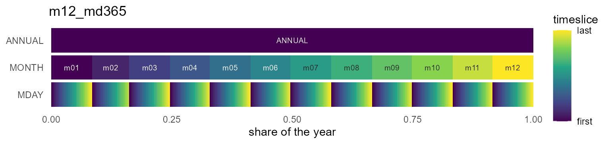
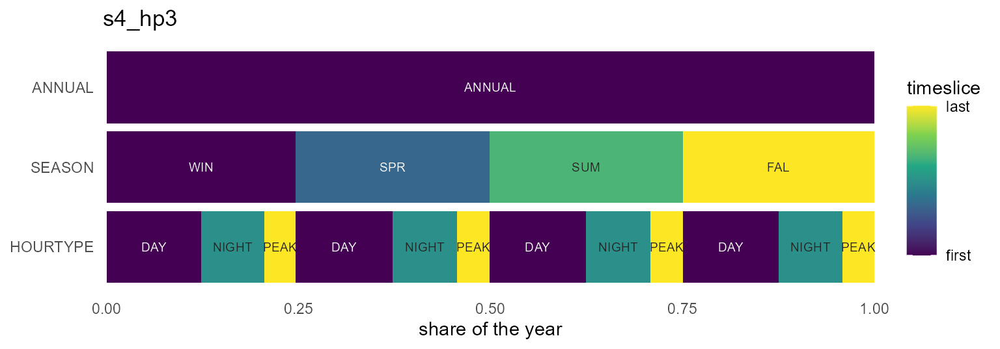
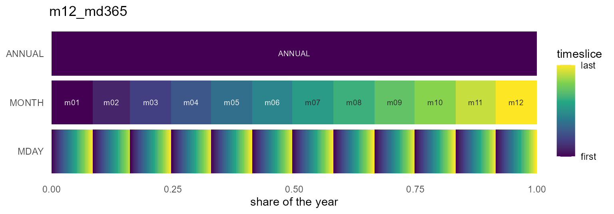
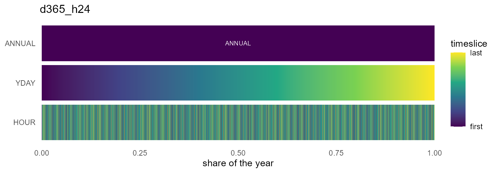
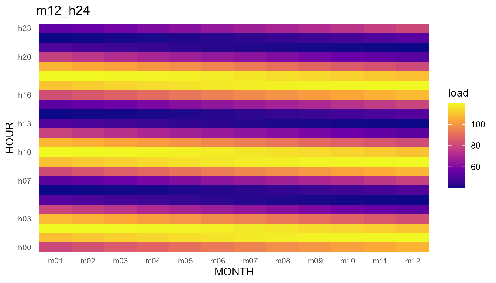

The catalog
timescales ships a curated catalog of named calendar
designs, ported from the predecessor timeslices package.
Every id can be built fresh with calendar(id), and the same
objects come pre-built in the calendars dataset:
knitr::kable(calendar_catalog())| id | tokens | timeframes | n_timeslices | coverage | regularity | desc |
|---|---|---|---|---|---|---|
| d360 | d360 | YDAY | 360 | truncated | regular | YDAY calendar (360 timeslices; truncated, regular) |
| d364 | d364 | YDAY | 364 | truncated | regular | YDAY calendar (364 timeslices; truncated, regular) |
| d365 | d365 | YDAY | 365 | truncated | regular | YDAY calendar (365 timeslices; truncated, regular) |
| d366 | d366 | YDAY | 366 | complete | regular | YDAY calendar (366 timeslices; complete, regular) |
| d360_h24 | d360+h24 | YDAY/HOUR | 8640 | truncated | regular | YDAY/HOUR calendar (8640 timeslices; truncated, regular) |
| d364_h24 | d364+h24 | YDAY/HOUR | 8736 | truncated | regular | YDAY/HOUR calendar (8736 timeslices; truncated, regular) |
| d365_h24 | d365+h24 | YDAY/HOUR | 8760 | truncated | regular | YDAY/HOUR calendar (8760 timeslices; truncated, regular) |
| d366_h24 | d366+h24 | YDAY/HOUR | 8784 | complete | regular | YDAY/HOUR calendar (8784 timeslices; complete, regular) |
| m12 | m12 | MONTH | 12 | complete | regular | MONTH calendar (12 timeslices; complete, regular) |
| m12a | m12a | MONTH | 12 | complete | regular | MONTH calendar (12 timeslices; complete, regular) |
| m12_h24 | m12+h24 | MONTH/HOUR | 288 | complete | regular | MONTH/HOUR calendar (288 timeslices; complete, regular) |
| m12a_h24 | m12a+h24 | MONTH/HOUR | 288 | complete | regular | MONTH/HOUR calendar (288 timeslices; complete, regular) |
| m12_md360 | m12+md360 | MONTH/MDAY | 360 | truncated | regular | MONTH/MDAY calendar (360 timeslices; truncated, regular) |
| m12_md360_h24 | m12+md360+h24 | MONTH/MDAY/HOUR | 8640 | truncated | regular | MONTH/MDAY/HOUR calendar (8640 timeslices; truncated, regular) |
| m12_md365 | m12+md365 | MONTH/MDAY | 365 | truncated | irregular | MONTH/MDAY calendar (365 timeslices; truncated, irregular) |
| m12_md365_h24 | m12+md365+h24 | MONTH/MDAY/HOUR | 8760 | truncated | irregular | MONTH/MDAY/HOUR calendar (8760 timeslices; truncated, irregular) |
| m12_md366 | m12+md366 | MONTH/MDAY | 366 | complete | irregular | MONTH/MDAY calendar (366 timeslices; complete, irregular) |
| m12_md366_h24 | m12+md366+h24 | MONTH/MDAY/HOUR | 8784 | complete | irregular | MONTH/MDAY/HOUR calendar (8784 timeslices; complete, irregular) |
| q4 | q4 | QUARTER | 4 | complete | regular | QUARTER calendar (4 timeslices; complete, regular) |
| s4 | s4 | SEASON | 4 | complete | regular | SEASON calendar (4 timeslices; complete, regular) |
| q4_h24 | q4+h24 | QUARTER/HOUR | 96 | representative | regular | QUARTER/HOUR calendar (96 timeslices; representative, regular) |
| s4_h24 | s4+h24 | SEASON/HOUR | 96 | representative | regular | SEASON/HOUR calendar (96 timeslices; representative, regular) |
| w52 | w52 | WEEK | 52 | truncated | regular | WEEK calendar (52 timeslices; truncated, regular) |
| w53 | w53 | WEEK | 53 | complete | regular | WEEK calendar (53 timeslices; complete, regular) |
| w52_h24 | w52+h24 | WEEK/HOUR | 1248 | representative | regular | WEEK/HOUR calendar (1248 timeslices; representative, regular) |
| w53_h24 | w53+h24 | WEEK/HOUR | 1272 | representative | regular | WEEK/HOUR calendar (1272 timeslices; representative, regular) |
| w52_h168 | w52+h168 | WEEK/WHOUR | 8736 | truncated | regular | WEEK/WHOUR calendar (8736 timeslices; truncated, regular) |
| w53_h168 | w53+h168 | WEEK/WHOUR | 8904 | complete | irregular | WEEK/WHOUR calendar (8904 timeslices; complete, irregular) |
| wd7 | wd7 | WDAY | 7 | representative | regular | WDAY calendar (7 timeslices; representative, regular) |
| wd7_h24 | wd7+h24 | WDAY/HOUR | 168 | representative | regular | WDAY/HOUR calendar (168 timeslices; representative, regular) |
| wk2 | wk2 | DAYTYPE | 2 | representative | regular | DAYTYPE calendar (2 timeslices; representative, regular) |
| wk2_h24 | wk2+h24 | DAYTYPE/HOUR | 48 | representative | regular | DAYTYPE/HOUR calendar (48 timeslices; representative, regular) |
| hp3 | hp3 | HOURTYPE | 3 | representative | regular | HOURTYPE calendar (3 timeslices; representative, regular) |
| d365_hp3 | d365+hp3 | YDAY/HOURTYPE | 1095 | representative | regular | YDAY/HOURTYPE calendar (1095 timeslices; representative, regular) |
| m12a_hp3 | m12a+hp3 | MONTH/HOURTYPE | 36 | representative | regular | MONTH/HOURTYPE calendar (36 timeslices; representative, regular) |
| s4_hp3 | s4+hp3 | SEASON/HOURTYPE | 12 | representative | regular | SEASON/HOURTYPE calendar (12 timeslices; representative, regular) |
| q4_hp3 | q4+hp3 | QUARTER/HOURTYPE | 12 | representative | regular | QUARTER/HOURTYPE calendar (12 timeslices; representative, regular) |
Two equivalent ways to get one:
cal <- calendar("m12_h24") # build on demand
cal2 <- calendars$m12_h24 # pre-built package data
identical(cal@leaves, cal2@leaves)
#> [1] TRUECoverage says how the design relates to a real year:
complete (every instant has a timeslice),
truncated (a stylised year that drops instants —
d365 has no Feb 29), or representative
(timeslices stand for recurring types rather than a partition of the
timeline — q4_h24 is a representative day per quarter).
Regularity flags designs whose timeslices differ in
length within a level (m12_md365: February is short).
Shares are duration-proportional
Unlike the timeslices originals — which gave every timeslice a uniform share — catalog calendars weight timeslices by real duration:
m12 <- calendars$m12
data.frame(timeslice = m12@leaves$timeslice, share = round(m12@leaves$share, 4))[1:3, ]
#> timeslice share
#> 1 m01 0.0849
#> 2 m02 0.0767
#> 3 m03 0.0849January is 31/365 of the year, not 1/12.
This is what makes recast_calendar(rule = "sum") conserve
and weighted_mean weight correctly.
The workhorses
The designs most models start from:
calendars$d365_h24 # 8,760 hourly timeslices, the full-resolution classic
#> Calendar: d365_h24
#> Timeframes (2):
#> - YDAY (365) [token: d365, alignment: drop_feb29]
#> - HOUR (24) [token: h24]
#> Leaf timeslices: 8760
#> year_fraction: 1
#> year_start: month=1, day=1
#> utc_offset_minutes: 0
calendars$m12_h24 # 288 timeslices: representative day per month
#> Calendar: m12_h24
#> Timeframes (2):
#> - MONTH (12) [token: m12]
#> - HOUR (24) [token: h24]
#> Leaf timeslices: 288
#> year_fraction: 1
#> year_start: month=1, day=1
#> utc_offset_minutes: 0
calendars$q4_h24 # 96 timeslices: representative day per quarter
#> Calendar: q4_h24
#> Timeframes (2):
#> - QUARTER (4) [token: q4]
#> - HOUR (24) [token: h24]
#> Leaf timeslices: 96
#> year_fraction: 1
#> year_start: month=1, day=1
#> utc_offset_minutes: 0The m12_md* family carries a real month/day structure
(non-Cartesian — February is short), useful when data arrives keyed by
month and day-of-month:
md <- calendars$m12_md365
nrow(md@leaves)
#> [1] 365
head(md@leaves[md@leaves$MONTH == "m02", ], 2)
#> MONTH MDAY share timeslice weight
#> 32 m02 d01 0.002739726 m02_d01 24
#> 33 m02 d02 0.002739726 m02_d02 24
tail(md@leaves[md@leaves$MONTH == "m02", ], 1) # Feb ends at d28
#> MONTH MDAY share timeslice weight
#> 59 m02 d28 0.002739726 m02_d28 24
instant_to_timeslice(as.Date(c("2021-03-15", "2020-02-29")), md) # Feb 29 -> NA
#> [1] "m03_d15" NAType axes: SEASON, DAYTYPE, HOURTYPE
Three derived timeframes back the compact “typical periods” designs — and unlike in timeslices, they are fully datetime-convertible:
-
SEASON— meteorological:WIN= Dec–Feb,SPR,SUM,FAL -
DAYTYPE—WORKDAY(Mon–Fri) /WEEKEND -
HOURTYPE—NIGHT(h22–h05),PEAK(h17–h20),DAY(the rest)
dtm <- as.POSIXct(c("2021-01-15 03:00", "2021-01-16 18:00",
"2021-07-14 12:00"), tz = "UTC")
instant_to_timeslice(dtm, calendars$s4_hp3)
#> [1] "WIN_NIGHT" "WIN_PEAK" "SUM_DAY"
instant_to_timeslice(dtm, calendars$wk2_h24)
#> [1] "WORKDAY_h03" "WEEKEND_h18" "WORKDAY_h12"The mappings are defaults, not dogma — register your own token
(e.g. a different peak window) with register_token() and
build a custom calendar from it.
Visualizing calendars
autoplot() (or plot()) draws a calendar’s
structure as an icicle: one band per timeframe with the
ANNUAL root on top, rectangle widths equal to timeslice
shares, x spanning the year on [0, 1]. The gradient
restarts inside each parent (color_pattern = "within"), so
nested structure is visible at a glance:

autoplot(calendars$s4_hp3)
autoplot(calendars$m12_md365)
Dense calendars stay fast — rows beyond max_segments are
binned before drawing:
autoplot(calendars$d365_h24)
The geometry itself is available without ggplot2 via
calendar_layout() — a plain data.frame of
rectangles, usable from any plotting system:
head(calendar_layout(calendars$q4_h24), 7)
#> timeframe label timeslice rank xmin xmax ymin ymax share
#> 1 ANNUAL ANNUAL ANNUAL 0 0.00000000 1.00000000 2 2.9 1.00000000
#> 2 QUARTER Q1 Q1 1 0.00000000 0.24657534 1 1.9 0.24657534
#> 3 QUARTER Q2 Q2 1 0.24657534 0.49589041 1 1.9 0.24931507
#> 4 QUARTER Q3 Q3 1 0.49589041 0.74794521 1 1.9 0.25205479
#> 5 QUARTER Q4 Q4 1 0.74794521 1.00000000 1 1.9 0.25205479
#> 6 HOUR h00 Q1_h00 2 0.00000000 0.01027397 0 0.9 0.01027397
#> 7 HOUR h01 Q1_h01 2 0.01027397 0.02054795 0 0.9 0.01027397
#> weight order within
#> 1 8760 1 1
#> 2 2160 1 1
#> 3 2184 25 2
#> 4 2208 49 3
#> 5 2208 73 4
#> 6 90 1 1
#> 7 90 2 2calendar_plot() is the data-on-calendar heatmap: hand it
a data.frame keyed by timeslice (or nothing, to see the
share structure). The layout follows the hierarchy — finest timeframe on
y, next on x, coarser levels as facets:
x <- data.frame(timeslice = calendars$m12_h24@leaves$timeslice)
x$load <- 80 + 40 * sin(seq(0, 6 * pi, length.out = nrow(x)))
calendar_plot(calendars$m12_h24, x, palette = "C")
Recasting across the catalog
Any two catalog calendars convert into each other; totals are
conserved under rule = "sum":
x <- data.frame(timeslice = calendars$m12@leaves$timeslice,
energy = c(310, 280, 300, 250, 220, 230,
260, 270, 240, 250, 280, 320))
recast_calendar(x, calendars$m12, calendars$s4, year = 2021, rule = "sum",
by = "day")
#> timeslice energy
#> 1 WIN 910
#> 2 SPR 770
#> 3 SUM 760
#> 4 FAL 770
sum(x$energy)
#> [1] 3210Or aggregate within one calendar via the ANNUAL
root:
recast_calendar(x, calendars$m12, to = "ANNUAL", year = 2021, rule = "sum",
by = "day")
#> timeslice energy
#> 1 ANNUAL 3210